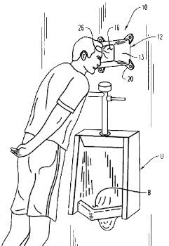
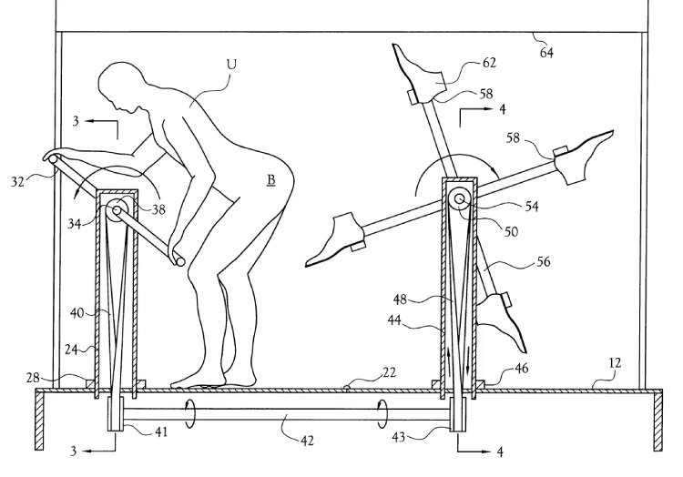

Vid 2000-talet så bilr det lite svårt att veta om uppfinnarna i fråga ville skämta eller var inte riktigt knäppa, det finns hela företag som säljer värdelösa sakar med flit. Vi vill helst ha ärliga försök men det är svårt att veta ibland vad uppfinnaren har tänkt.

Eric D.Page gjorde den här patente från 2004. Har du någonsin varit så trött när du kissar att du vill luta din mot väggen? Då är det här för dig! Vila det huved mot "the head rest stand". Om du är okej med iden att ha din panna mot vart andra svettiga pannor har varit så kan det här vara praktiskt, så länge du inte är så trött att du somnar.

Har du någonsin villat bli sparked i röven? Eller se någon bli förnedrad på ett sånt sätt? Med den här kan du det! Joe Armstrong är mannen bakom denna ide.